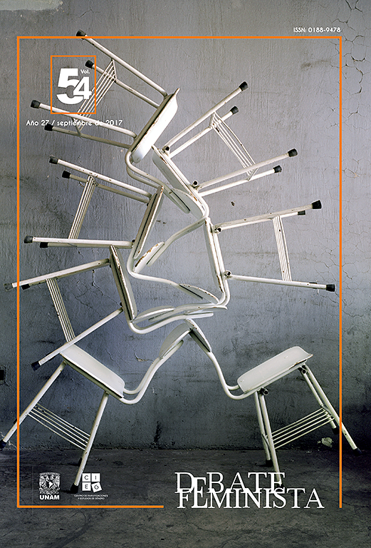

Recomendaciones
En esta entrada estaremos dando algunas recomendaciones personales acerca del tema, impregnando cada una de ellas con la personalidad del autor.
Recomendación Individual.
Ana 🌚
Tomado de Salles, 2014: La ciencia, dice y produce no solo objetos tangibles que afectan la vida de las personas, sino que también construye ideas y conceptos, en especial cuando investiga rasgos pertenecientes a grupos de personas. En tanto la estructura psicológica de los seres humanos se ve fuertemente influida por la cultura en la que viven, y en tanto la ciencia moldea las creencias sociales de las personas, los mismos estudios sobre diferencias sexuales pueden llegar a producir cambios en el sujeto que investigan. Para Fine (citado en Salles, 2014)es indudable que los estereotipos de género afectan la percepción social y el comportamiento de las personas. Pero su impacto es negativo, dado que tienen el potencial de naturalizar y perpetuar inequidades (esta vez justificadas por factores biológicos), así como de mantener en posición de desventaja a las mujeres.
Salles, A. (2014). Las diferencias sexuales y la discusión neuroética. Debate Feminista, 49, 94-115. https://doi.org/10.1016/S0188-9478(16)30005-6
Sugerencia de Lectura.

Es publicada físicamente y virtualmente (open access).
Christian 👨💻
En lo personal me encanta las matemáticas, la estadística y la progrmación por lo cual les vengo a recomendar tres libros acerca de estos temas y su relación con el feminismo y el género.
Data Feminism.
Este primer libro relata como se relaciona el feminismo con la ciencia de datos un tópico que ha ganado mucha popular hoy en día y que cuyos conocimientos son los cimientos para generar investigación de forma correcta y con mayor impacto.
Este un trozo de su contraportada: ``Data Feminism offers strategies for data scientists seeking to learn how feminism can help them work toward justice, and for feminists who want to focus their efforts on the growing field of data science. But Data Feminism is about much more than gender. It is about power, about who has it and who doesn’t, and about how those differentials of power can be challenged and changed.’’
Puedes encontrar más acerca de este libro aquí
Power in Numbers: The Rebel Women of Mathematics.
Este libro relata la influencia de grandes matemáticas que cambiaron el mundo gracias a su trabajo en este campo tan hermoso pero por mucho tiempo ha creado una barrera para las mujeres. Puedes encontrar más información del libro aquí.
Technically Wrong: Sexist Apps, Biased Algorithms, and Other Threats of Toxic Tech.
Este libro habla acerca de como la mayoría de la tecnología actual incluyendo algorítmos computacionales usados en IA están muy sesgados para representar al sector masculino dominante. Puedes encontrar más información acerca de este libro aquí
America 🐱
Feminismo para Principiantes.
La autora recorre los grandes movimientos que han conformado a esta teoría política y movimiento social Feminismo para principiantes.
Esta peculiar obra, la cual se ha convertido en un referente del tema, goza de un contenido extraordinario, relevante y práctico para contextualizar la actualidad de los movimientos feministas. Nuria Varela nos ofrece un extraordinario viaje —haciendo hincapié en los tres recientes siglos— sobre los momentos históricos más relevantes del feminismo para poder así comprender qué es dicho fenómeno y cómo es que se ha prolongado en el tiempo.
Una introducción al asunto accesible, muy bien documentada y que te hará reflexionar sobre la fuerza del pasado para transformar el presente.
Puedes leerlo y descargarlo aquí mismo.
Las Diosas de Cada Mujer.
¿Por qué algunas mujeres valoran, ante todo, el matrimonio y la familia, mientras que otras atribuyen más importancia a la independencia y a la propia realización? ¿Por qué una misma mujer se comporta, según sea el entorno, como extravertida o introvertida? Éstas y otras muchas preguntas reciben una insólita y fascinante respuesta en el presente libro. Sucede que cuanto más compleja es una mujer más probable es que tenga dentro de sí muchas diosas activas. La tarea consiste en decidir cuál de ellas cultivar y cuál superar. Las diosas de cada mujer explica que cuando una mujer comprende sus propios patrones internos puede llegar a superar toda una serie de dicotomías restrictivas, tales como: masculinofemenino, madreamante, profesionalama de casa, etc. Estos patrones internos toman la forma de siete diosas arquetípicas que son otros tantos tipos de personalidad. Se trata de que cada mujer identifique a sus diosas dominantes (que van desde la autónoma Artemisa y la fría Atenea hasta la nutritiva Deméter y la creativa Afrodita, pasando por Hera, diosa del matrimonio, o Perséfone, reina del mundo subterráneo, o Hestia, prototipo de la mujer paciente). Las diosas de cada mujer es, en suma, una guía escrita para todas las mujeres por la fuente de su propio misterio, y para todos los hombres encantados por una mujer.
Un excelente libro que puedes leer aquí mismo y descargarlo.